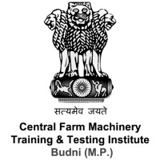
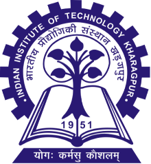

Research Intern — Haldia Water Services Pvt. Ltd.
May 2025 – July 2025
- Conducted water quality assessment and turbidity trend analysis.
- Evaluated filtration efficiency and treatment performance for WTP processes.
- Prepared analytical reports supporting process optimization.
View Certificate

Engineer Trainee — CFMTTI, Bhopal
July 2022 – Aug 2022
- Hands-on training in agricultural machinery and equipment diagnostics.
- Performed maintenance operations, inspection, and field testing.
View Certificate

Teaching Assistant — IIT Kharagpur
2025
- Assisted in water engineering coursework, lab activities, and academic guidance.
- Helped students in conceptual understanding and analytical tasks.
View Certificate
Placement Coordinator — IIT Kharagpur
2025 – 2026
- Coordinated company outreach and student placement operations.
- Facilitated communication between recruiters and students for smooth scheduling.
View Certificate
HAMMER Training (WaterGEMS) – Fundamental
2025 – 2025
- Completed HAMMER Training (WaterGEMS – Fundamental) by Bentley Systems.
- covering surge analysis, pressure transients, and pressure management in water distribution systems.
View Certificate